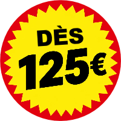

Assistance en cas de panne
Votre véhicule ne démarre pas ? Votre batterie vous lâche ? Avez-vous un pneu crevé ? Ou vous êtes-vous enfermé dehors de votre voiture par accident ? Notre assistance en cas de panne vient vous aider !
Nous sommes prêts pour vous 24/7 dans toute la Flandre !
Personne n'aime attendre quand votre planning s'effondre à cause de circonstances inattendues. Faster Depannage Takeldienst se précipite à votre secours en cas de panne, d'accident ou de transport. Nous garantissons la vitesse, l'efficacité et des accords de prix clairs. Parce que dites-le vous-même ? Personne n'aime être confronté à des surprises.

Appelez ou WhatsApp nous ! Nous sommes joignables 24/7 pour vous aider le plus rapidement possible.
Envoyez un message via le formulaire ci-dessous. Nous répondons dès que possible.
Nous offrons des solutions pour un large éventail de problèmes. Notre équipe dispose des connaissances techniques et de la capacité de résolution de problèmes pour trouver la bonne solution à votre problème.
Votre véhicule ne démarre pas ? Votre batterie vous lâche ? Avez-vous un pneu crevé ? Ou vous êtes-vous enfermé dehors de votre voiture par accident ? Notre assistance en cas de panne vient vous aider !
Panne ou dommages après un accident ou un incendie ? Nous récupérons votre véhicule en toute sécurité et l'amenons à un endroit convenu.
À la recherche d'un transport approprié pour amener votre véhicule à la destination souhaitée ? Alors vous êtes à la bonne adresse chez nous, tant pour le transport national qu'international.
Certains véhicules demandent plus de capacité et une approche sur mesure. Pas de soucis, là aussi nous avons les bons matériaux et les connaissances pour cela !
Des questions sur les véhicules lourds, les machines spéciales et les matériaux spécifiques ? Nous vous aidons volontiers.
Problèmes ou besoin d'aide avec votre véhicule à l'étranger. Nous assurons aussi le transport international, entre autres en Allemagne, en France, en Irlande, en Italie, au Royaume-Uni et plus loin.
Nous ne travaillons pas avec des solutions standard ou toutes faites. Chaque situation exige une approche spécifique sur mesure. Nous écoutons, conseillons et veillons à la bonne aide.
Décrivez votre situation et votre emplacement. Transmettez la marque et le modèle de votre véhicule et décrivez l'urgence de votre appel.
Nous analysons votre situation, conseillons une solution et vous donnons à l'avance un prix fixé honnête.
Nous, ou l'un de nos partenaires fiables, venons offrir l'aide convenue.
La sécurité avant tout ! Une panne en route est tout sauf agréable, mais pensez que l'aide est en route. Veillez, pendant que vous nous attendez, sur votre propre sécurité et celle de vos co-passagers.
Toutes les situations ne sont pas aussi faciles à résoudre, mais des solutions difficiles existent aussi.
Nos nombreuses interventions font que nous pas de photos de stock nécessaires pour illustrer notre travail. Ci-dessous une sélection de nos archives photo.


Faster dans une petite équipe avec un seul interlocuteur, de sorte que la communication et les accords se déroulent avec fluidité et personnellement.
Gérant : « En tant que gérant avec des années d'expérience dans le secteur automobile, je peux bien évaluer les problèmes et conseiller des solutions correctes abordables. En investissant dans du matériel de travail de bonne qualité et dans un réseau de partenaires professionnels, nous pouvons résoudre beaucoup de problèmes. »
« Très satisfait, ils étaient déjà sur place en 15 minutes et le prix est tout simplement excellent !!! Vraiment à recommander !!! »
« Service parfait. Disponible même à 1h du matin. Présent en moins de 20 minutes. Et pour un bon prix en plus. Très satisfait ! »
« Quelqu'un qui connaît vraiment son métier, chauffeur très sympathique, assistance professionnelle, merci pour la rapidité 👍 »
« Service absolument incroyable !!! On était coincés, ma copine et moi, après qu'un gros lapin ait percuté mon pare-chocs et fait fuir le liquide de refroidissement en pleine forêt. La solution la plus rapide pour amener mon Audi A5 au garage et nous à l'hôtel, c'était eux. Très gentils et professionnels, ils nous ont aussi déposés à l'hôtel, et le prix était très raisonnable vu l'heure. Merci 🫶 »
« Wow, super service ! Arrivés très rapidement et tout géré de façon très professionnelle. J'ai dû les appeler la nuit et ils étaient là immédiatement, un vrai soulagement. La voiture a été remorquée avec beaucoup de soin, sans la moindre rayure. C'est incroyable qu'ils soient prêts à aider 24h/24. Un grand merci à l'équipe, vivement recommandé si vous êtes en panne ! »
« Service vraiment efficace, bonne communication, chauffeur très sympathique et prudent, qui parlait aussi très bien anglais ! Il nous a transportés, nous et notre voiture, de Reims à Calais... on a même réussi à prendre la navette plus tôt. Vivement recommandé 👌 »
« Excellent service, chauffeur très sympathique, merci beaucoup »
« Panne un dimanche à Breda, aide immédiate. Service de remorquage rapide, professionnel et sympathique. »
« Service super rapide et très sympathique ! »
« Arrivée super rapide et prix conforme à ce qui avait été convenu, sans mauvaise surprise. »
« J'étais bloqué sur l'autoroute, une situation très dangereuse avec ma femme et mes enfants. Ils sont arrivés très rapidement et étaient les moins chers disponibles à ce moment-là. Merci beaucoup. »
« Top service ! Ces personnes sont très professionnelles. Nous sommes très satisfaits ! »
Choisissez votre commune et découvrez comment Faster peut vous aider.
France · Espagne · Allemagne · Italie · Autriche · Suisse · Royaume-Uni · Irlande
Appelez Faster — 03/375.67.37Des informations pratiques, sans jargon marketing.
Appelez-nous directement. On regarde tout de suite ce qu'il faut faire.
